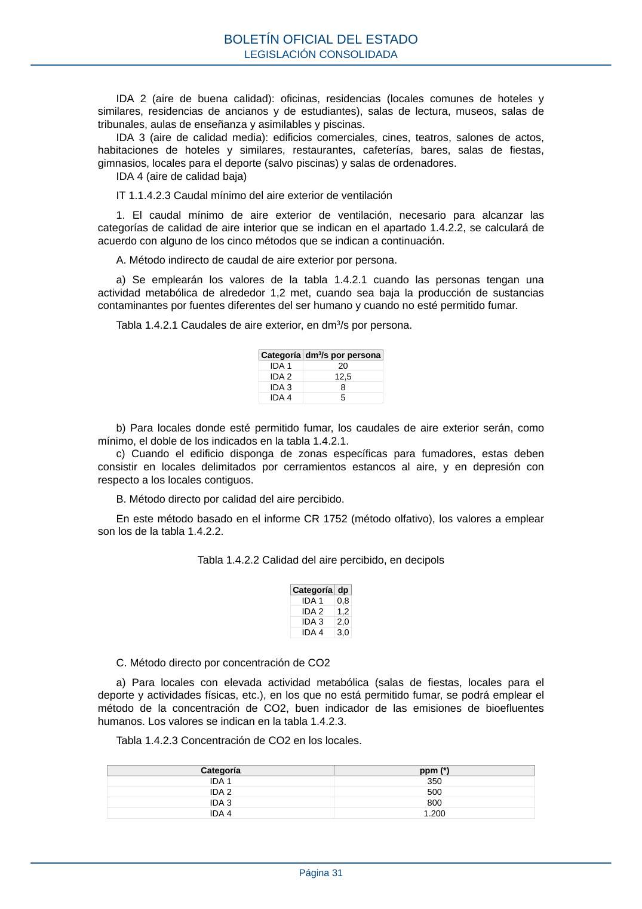

RITE · Página 31 · versión 2022-08-02
SHA256: ad1680c83bf4c7f5c656af1794c32ad0669ad9f36ac293737ff3f95177ff7b26 · página física 31 de 97 · métodos de encabezado
solo si están cotejados.
Formatos: Markdown · JSON de bloques · PDF p. 31 · imagen PNG
IDA 2 (aire de buena calidad): oficinas, residencias (locales comunes de hoteles y similares, residencias de ancianos y de estudiantes), salas de lectura, museos, salas de tribunales, aulas de enseñanza y asimilables y piscinas. IDA 3 (aire de calidad media): edificios comerciales, cines, teatros, salones de actos, habitaciones de hoteles y similares, restaurantes, cafeterías, bares, salas de fiestas, gimnasios, locales para el deporte (salvo piscinas) y salas de ordenadores. IDA 4 (aire de calidad baja) IT 1.1.4.2.3 Caudal mínimo del aire exterior de ventilación 1. El caudal mínimo de aire exterior de ventilación, necesario para alcanzar las categorías de calidad de aire interior que se indican en el apartado 1.4.2.2, se calculará de acuerdo con alguno de los cinco métodos que se indican a continuación. A. Método indirecto de caudal de aire exterior por persona. a) Se emplearán los valores de la tabla 1.4.2.1 cuando las personas tengan una actividad metabólica de alrededor 1,2 met, cuando sea baja la producción de sustancias contaminantes por fuentes diferentes del ser humano y cuando no esté permitido fumar. Tabla 1.4.2.1 Caudales de aire exterior, en dm3/s por persona. Categoría dm3/s por persona IDA 1 20 IDA 2 12,5 IDA 3 8 IDA 4 5 b) Para locales donde esté permitido fumar, los caudales de aire exterior serán, como mínimo, el doble de los indicados en la tabla 1.4.2.1. c) Cuando el edificio disponga de zonas específicas para fumadores, estas deben consistir en locales delimitados por cerramientos estancos al aire, y en depresión con respecto a los locales contiguos. B. Método directo por calidad del aire percibido. En este método basado en el informe CR 1752 (método olfativo), los valores a emplear son los de la tabla 1.4.2.2. Tabla 1.4.2.2 Calidad del aire percibido, en decipols Categoría dp IDA 1 0,8 IDA 2 1,2 IDA 3 2,0 IDA 4 3,0 C. Método directo por concentración de CO2 a) Para locales con elevada actividad metabólica (salas de fiestas, locales para el deporte y actividades físicas, etc.), en los que no está permitido fumar, se podrá emplear el método de la concentración de CO2, buen indicador de las emisiones de bioefluentes humanos. Los valores se indican en la tabla 1.4.2.3. Tabla 1.4.2.3 Concentración de CO2 en los locales. Categoría ppm (*) IDA 1 350 IDA 2 500 IDA 3 800 IDA 4 1.200 BOLETÍN OFICIAL DEL ESTADO LEGISLACIÓN CONSOLIDADA Página 31
